What you'll see here isn't a highlight reel of my best work. It's a record of the chances I was given.
I've worked across design, video, branding and marketing because people trusted me early and supported me through the learning. I kept saying yes, and I kept building. That cycle isn't finished.
Any designer can produce work. But the day you stop learning is the day you stop being an artist.
Stage backdrops, signage, standees, and full brand collateral produced for large-format events — designed on screen, judged in person.
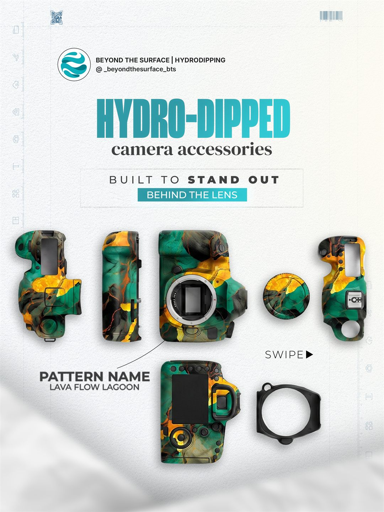
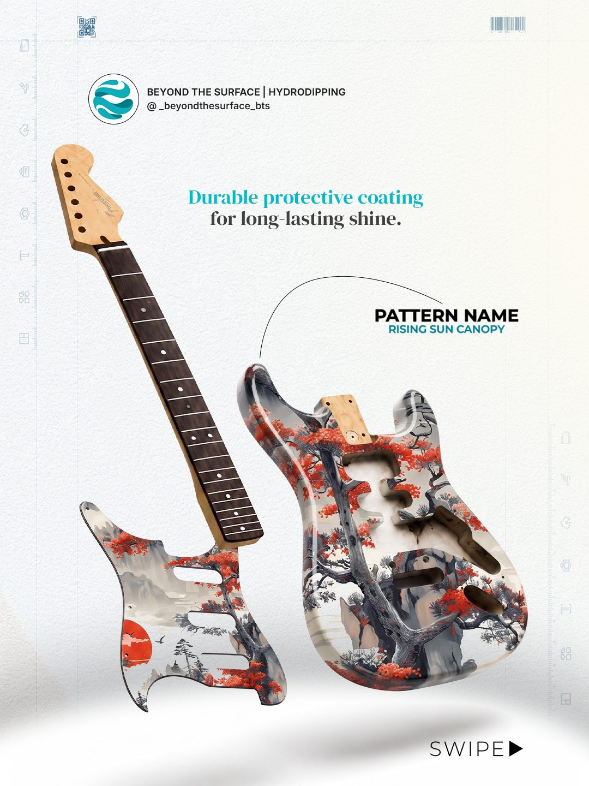
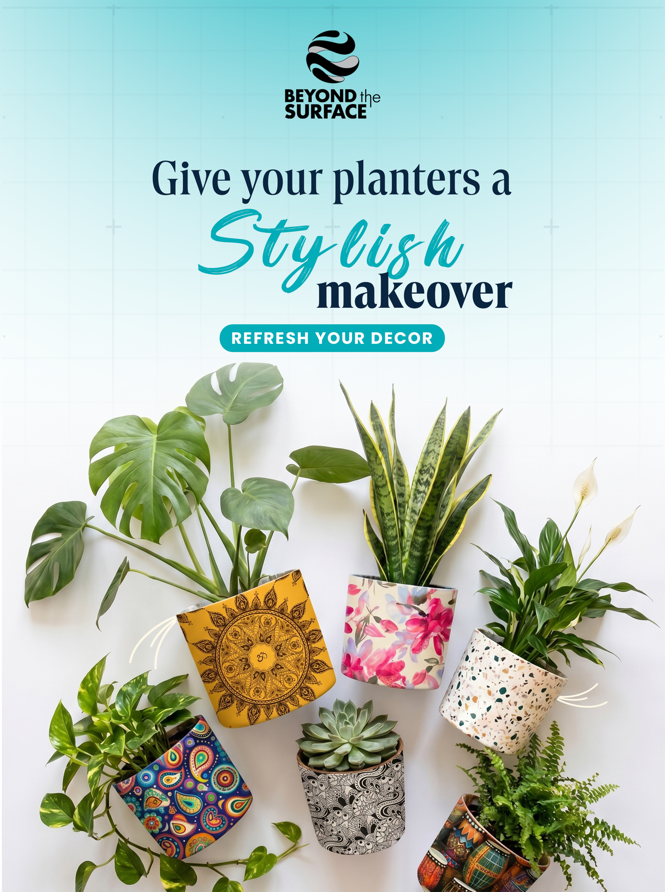
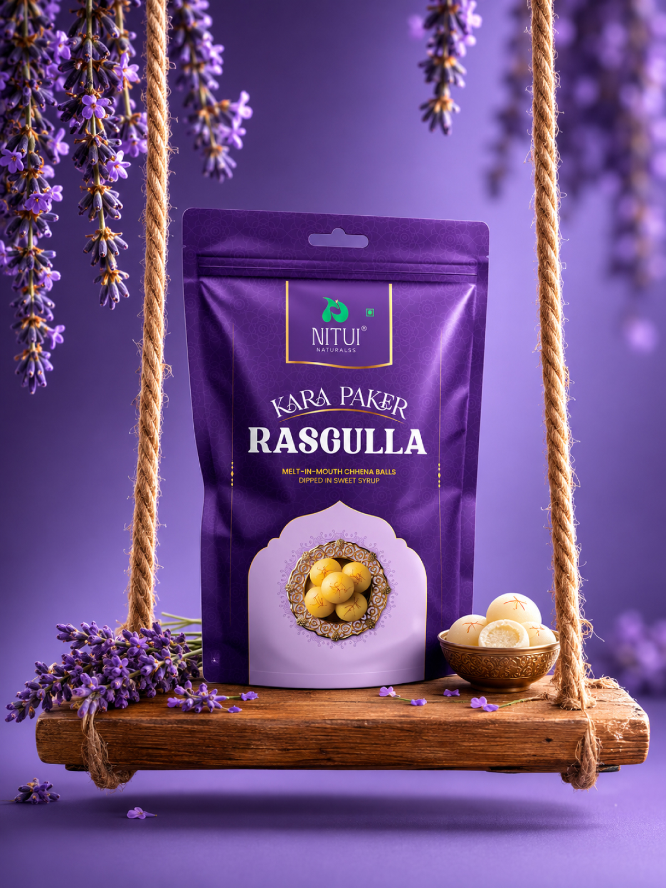
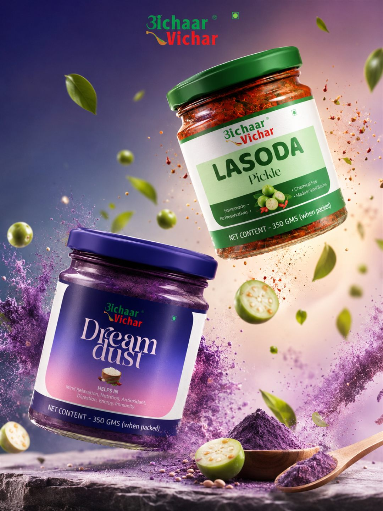
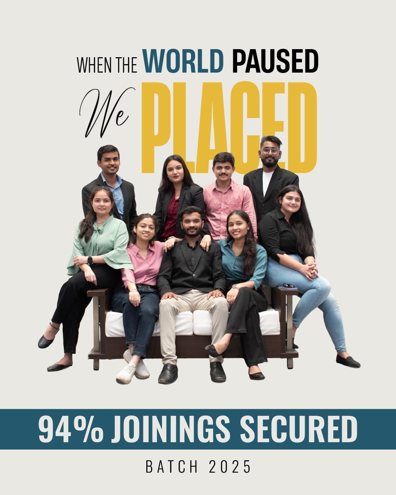
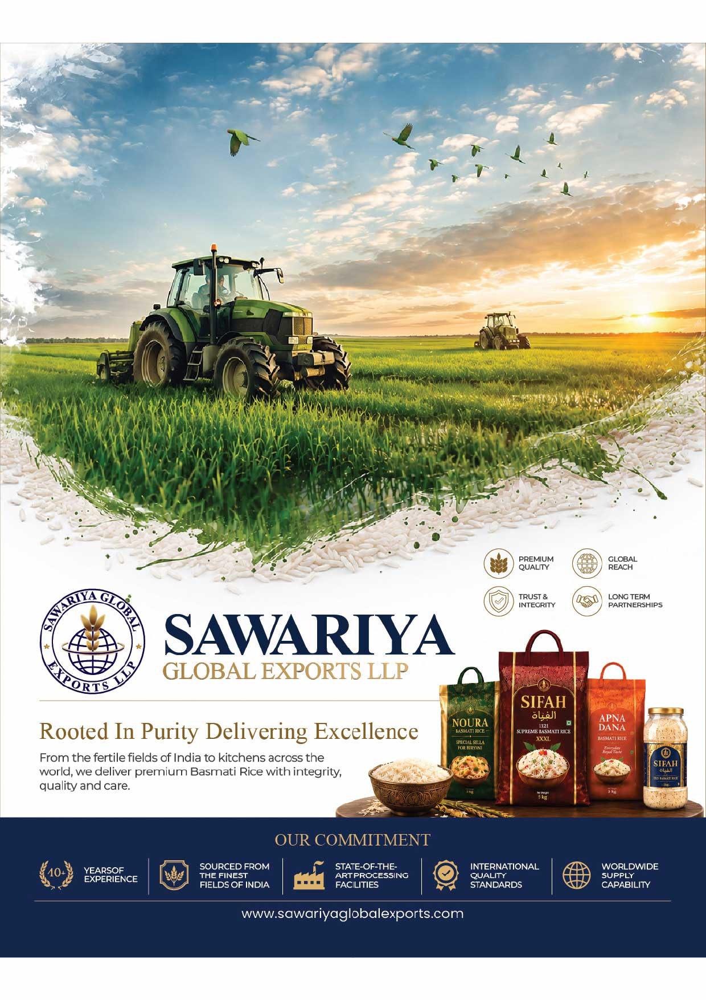
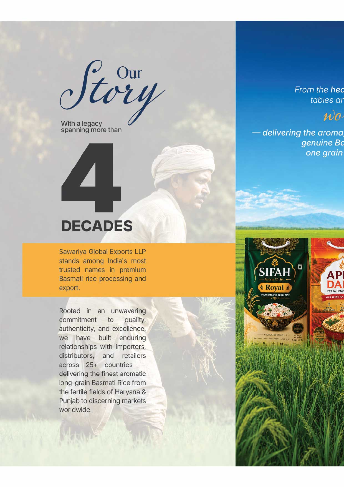
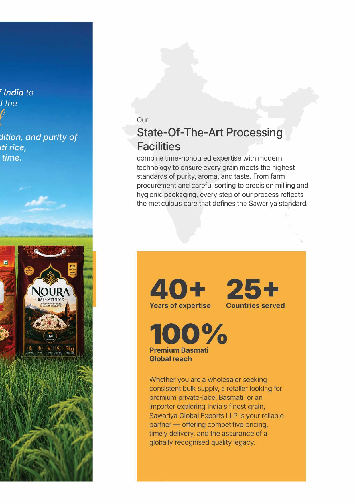
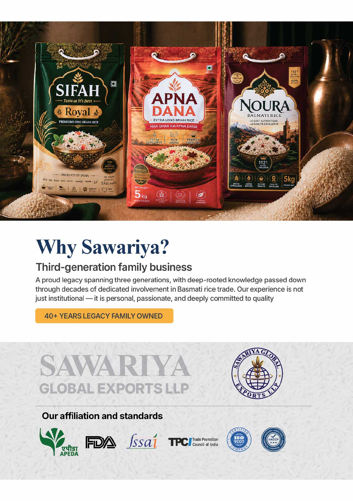
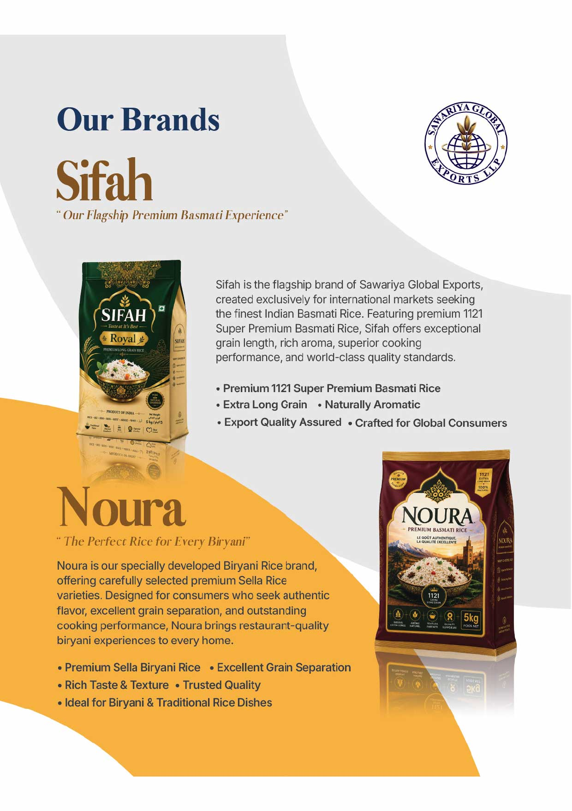
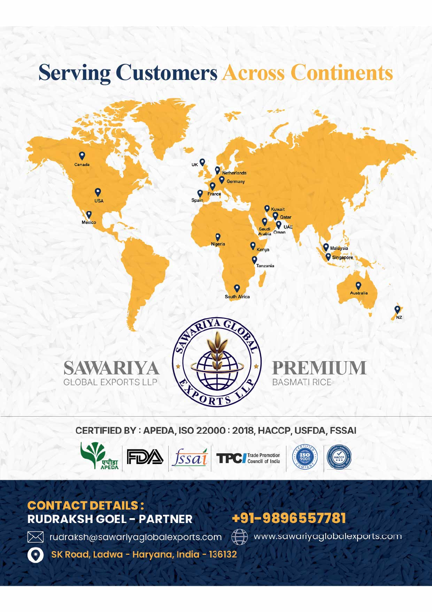
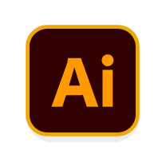
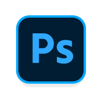
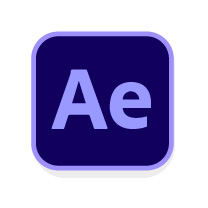
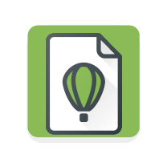
Marks built from the inside out — a single idea, drawn tight enough to survive an embroidery patch and an LED wall.
Brochures, catalogues, and stationery set on a real grid and delivered press-ready — CMYK, bleed, marks, the lot.
Work that has to land in three seconds at eighty kilometres an hour. Scaled artwork, legible type, colour that survives sunlight.
Shelf-first thinking — dielines that actually fold, mandatory copy that still looks composed, and finishes worth touching.
Cut for rhythm, graded for mood, mixed to be heard on a phone speaker. Brand films, ad edits, event recaps and long-form.
Identity extended into time — logo reveals, titles, animated infographics, and motion kits a team can keep reusing.
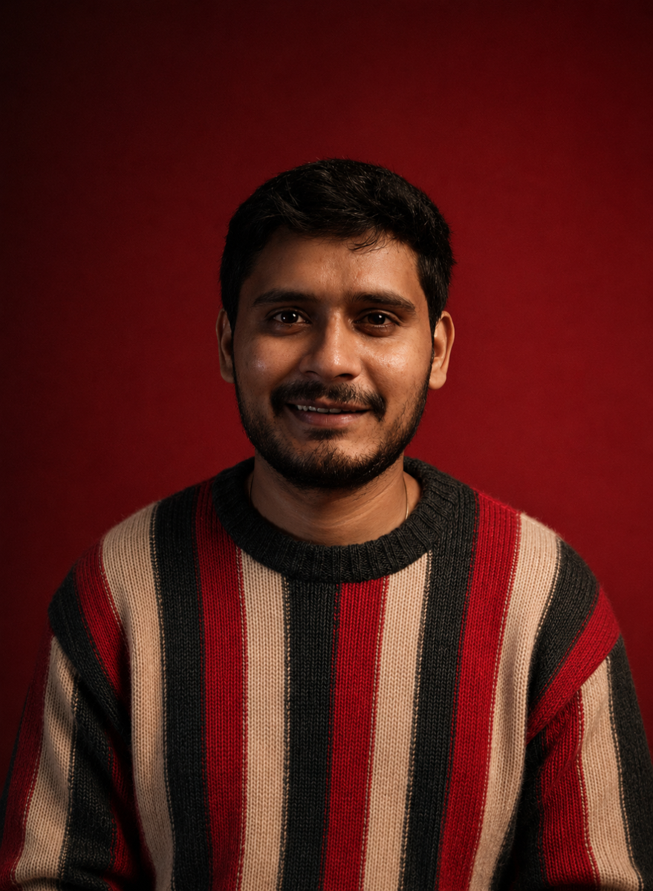
Hi, I'm a 27-year-old designer based in India, with over 3+ years of experience in graphic design and video editing. My work spans across branding, social media, packaging, and motion design, where I aim to create visuals that not only look good but also communicate effectively. Every project I take on is an opportunity to craft something meaningful, purposeful, and beautifully precise.
Have a project in mind? Send a message and I'll get back to you.
Social Media
Campaigns
Feed systems, not one-off posts — grids, carousels, and ad creative designed to stay recognisable at thumbnail size.
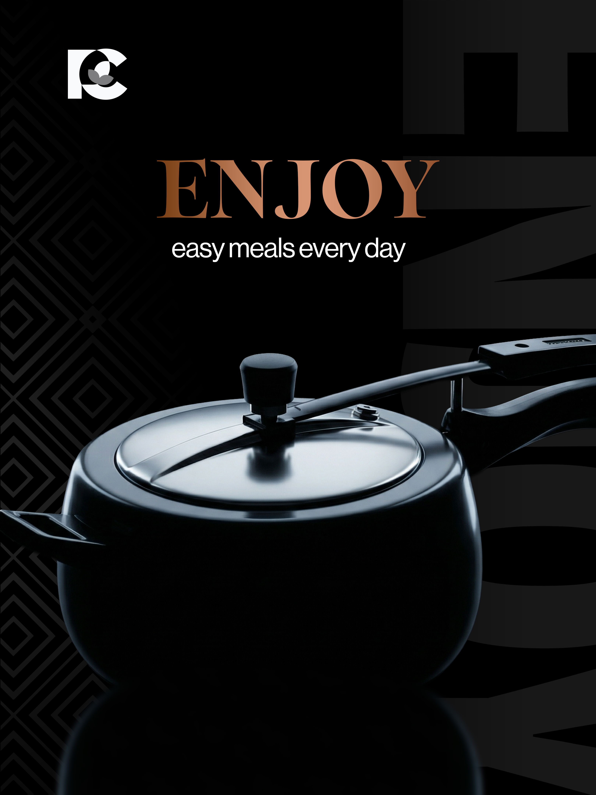